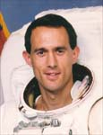

Lyndon B. Johnson Space Center
Houston, Texas 77058
|
National Aeronautics and Space Administration Lyndon B. Johnson Space Center Houston, Texas 77058 |
 |
Biographical Data |
||
James H. Newman (Ph.D.)
NASA ASTRONAUT (FORMER)
PERSONAL DATA: Born October 16, 1956, in the Trust Territory of the Pacific Islands (now the Federated States of Micronesia), but considers San Diego, California, to be his hometown. Married to Mary Lee Pieper. Three children. His mother, Ms. Ruth Hansen, and his father, Dr. William Newman, are both residents of San Diego. Mary Lee’s parents, Mr. & Mrs. Wylie Bernard Pieper, reside in Houston, Texas.
EDUCATION: Graduated from La Jolla High School, San Diego, California in 1974; received a bachelor of arts degree in physics from Dartmouth College in 1978, a master of arts degree and a doctorate in physics from Rice University in 1982 and 1984, respectively.
ORGANIZATIONS: Member of the American Physical Society, Sigma Xi, and American Institute of Aeronautics and Astronautics.
SPECIAL HONORS: Selected by NASA JSC to attend the 1989 summer session of the International Space University in Strasbourg, France. Awarded the 1995 Superior Achievement Award by the Institute of Navigation for "outstanding accomplishments as a Practical Navigator" for his work on GPS (Global Positioning System) on the Space Shuttle. 1996 NASA Exceptional Service Medal. Recipient of the American Astronautical Society Flight Achievement Award (1994, 1999) for his work as a member of the STS-51 and STS-88 crews. As the leader of the Space Vision System Development Team, Newman shared the 2001 Rotary National Award for Space Achievement Foundation's Team Award and shared a 2002 NASA Group Achievement Award to the Space Vision System Team.
EXPERIENCE: After graduating from Rice University in 1984, Dr. Newman did an additional year of post-doctoral work at Rice. In 1985, Dr. Newman was appointed as adjunct professor in the Department of Physics and Astronomy at Rice University. That same year he came to work at NASA’s Johnson Space Center, where his duties included responsibility for conducting flight crew and flight control team training for all mission phases in the areas of Orbiter propulsion, guidance, and control. When selected for the astronaut program he was working as a simulation supervisor responsible for a team of instructors conducting flight controller training.
Selected by NASA in January 1990, Dr. Newman began astronaut training in July 1990. His technical assignments since then include: Astronaut Office Mission Support Branch where he was part of a team responsible for crew ingress/strap-in prior to launch and crew egress after landing; Mission Development Branch working on the Shuttle on-board laptop computers; Chief of the Astronaut Office Computer Support Branch responsible for crew involvement in the development and use of computers on the Space Shuttle and Space Station.
While still assigned to the Astronaut Office Dr. Newman has also worked in various assignments at NASA. Detailed to the Space Shuttle Program Office from March 1999 to March 2001, Newman served as the Remote Manipulator System (RMS) Integration Manager responsible for the Orbiter Canadian robotic arm and the Space Vision System.
Dr Newman was detailed to the International Space Station (ISS) Program Office from December 2002 through January 2006, serving as NASA’s Director, Human Space Flight Program, Russia. As the ISS Program Manager’s lead representative to the Russian Federal Space Agency (Roskosmos) and its contractors, his responsibilities included oversight of NASA’s human space flight program in Russia. This included NASA operations, logistics, and technical functions in Moscow, at NASA’s Mission Control Center operations in Korolev, and NASA’s crew training at the Gagarin Cosmonaut Training Center in Star City.
In March 2006, Dr. Newman was detailed to the Naval Postgraduate School (NPS) in Monterey, California, as a NASA Visiting Professor in the NPS Space Systems Academic Group. Dr. Newman left NASA in July 2008 to accept a position as Professor, Space Systems at NPS to continue his involvement in teaching and research, with an emphasis on using very small satellites in hands-on education and for focused research projects of national interest.
SPACE FLIGHT EXPERIENCE: Dr. Newman flew as a mission specialist on STS-51 (1993), STS-69 (1995), STS-88 (1998) and STS-109 (2002). A veteran of four space flights, Dr. Newman has logged over 43 days in space, including six spacewalks totaling 43 hours and 13 minutes.
STS-51 Discovery, (September 12-22, 1993) was launched from and returned to make the first night landing at Kennedy Space Center, Florida. During the ten-day flight, the crew of five deployed the Advanced Communications Technology Satellite (ACTS) and the Orbiting and Retrievable Far and Extreme Ultraviolet Spectrometer on the Shuttle Pallet Satellite (ORFEUS/SPAS). Newman was responsible for the operation of the SPAS, was the backup operator for the RMS, and on flight day five conducted a seven-hour, five-minute spacewalk with Carl Walz. The extravehicular activity (EVA) tested tools and techniques for use on future missions. In addition to working with numerous secondary payloads and medical test objectives, the crew successfully tested a Global Positioning System (GPS) receiver to determine real-time Shuttle positions and velocities and completed a test routing Orbiter data to on-board laptop computers. STS-51 made 158 orbits of the Earth, traveling 4.1 million miles in 236 hours and 11 minutes.
STS-69 Endeavour (September 7-18, 1995), was an eleven-day mission during which the crew successfully deployed and retrieved a SPARTAN satellite and the Wake Shield Facility (WSF). Also on board was the International Extreme Ultraviolet Hitchhiker payload, numerous secondary payloads, and medical experiments. Newman was responsible for the crew’s science involvement with the WSF and was also the primary RMS operator on the flight, performing the WSF and EVA RMS operations. He also operated the on-orbit tests of the Ku-band Communications Adaptor, the Relative GPS experiment, and the RMS Manipulator Positioning Display. The mission was accomplished in 171 Earth orbits, traveling 4.5 million miles in 260 hours, 29 minutes.
STS-88 Endeavour (December 4-15, 1998), was the first International Space Station assembly mission. During the twelve-day mission the Unity module was mated with Zarya module. Newman performed three spacewalks with Jerry Ross, totaling 21 hours, 22 minutes. The primary objective of the spacewalks was to connect external power and data umbilicals between Zarya and Unity. Other objectives include setting up the Early Communication antennas, deploying antennas on Zarya that had failed to deploy as expected, installing a sunshade to protect an external computer, installing translation aids, and attaching tools/hardware for use in future EVA’s. The crew also performed IMAX Cargo Bay Camera (ICBC) operations, and deployed two satellites, Mighty Sat 1, sponsored by the Air Force, and SAC-A, from Argentina. The mission was accomplished in 185 orbits of the Earth, traveling 4.6 million miles in 283 hours and 18 minutes.
STS-109 Columbia (March 1-12, 2002). STS-109 was the fourth Hubble Space Telescope (HST) servicing mission and the 108th flight of the Space Shuttle. The crew of STS-109 successfully upgraded the Hubble Space Telescope with new solar arrays, a new power control unit, and a new camera, and also installed a cooler to reactivate an old infrared camera. This work was accomplished during a total of five spacewalks in five consecutive days. Dr. Newman performed two spacewalks with crewmate Mike Massimino, totaling 14 hours and 46 minutes. During the first of these spacewalks, Newman and Massimino replaced an old solar array and a reaction wheel assembly with new units. During their second spacewalk they replaced the old Faint Object Camera with the state-of-the-art Advanced Camera for Surveys, producing a ten-fold increase in Hubble's imaging capability. STS-109 orbited the Earth 165 times, traveling 3.9 million miles in 262 hours and 10 mminutes.
AUGUST 2008